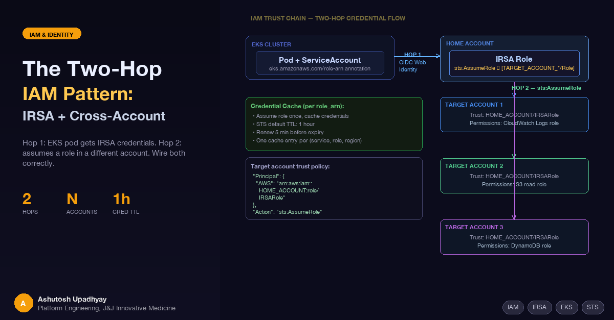

Your pod gets credentials from IRSA. Then it assumes a role in a different account. Here's how to wire both hops without creating a credential management nightmare.
IRSA (IAM Roles for Service Accounts) solves the credential problem for EKS workloads that only need access to resources in their own AWS account. The moment your pod needs to reach a resource in a different account — CloudWatch logs here, an S3 bucket there, a DynamoDB table somewhere else — IRSA alone isn't enough. You need a second hop.
The two-hop pattern is the standard solution: IRSA gets the pod an identity in the home account, then the application code calls sts:AssumeRole to get credentials in the target account. Done right, it's clean and auditable. Done wrong, it produces intermittent ExpiredTokenException errors at 3 AM and confused-deputy vulnerabilities in your trust policies.
Here's how to wire it correctly.
An IRSA role is scoped to a single AWS account — the account where the EKS cluster runs. Its trust policy names the cluster's OIDC provider as the trusted principal, and conditions lock it to a specific Kubernetes ServiceAccount. That's the right boundary for workload identity. But it means an IRSA role can only directly access resources in the same account.
When your workload spans accounts — reading usage metrics from multiple AWS accounts, federating data from different environments, or querying resources that live in separate accounts for governance reasons — you need credentials in each of those accounts. The clean way to get them: the IRSA role in the home account assumes a role in each target account. Each assumption is explicit, auditable, and controlled by trust policies that you own.
Hop 1: OIDC Web Identity
─────────────────────────────────────────────────────────
EKS Pod Home Account
┌──────────────────┐ ┌──────────────────────────┐
│ Kubernetes │ OIDC │ IRSA Role │
│ ServiceAccount │────────>│ (MyAppRole) │
│ + token mount │ token │ trust: OIDC provider │
└──────────────────┘ xchg │ condition: sub + aud │
└──────────────────────────┘
Hop 2: sts:AssumeRole
─────────────────────────────────────────────────────────
Home Account Target Accounts
┌──────────────────────────┐ ┌──────────────────────────┐
│ IRSA Role │ │ Target Role A │
│ (MyAppRole) │─>│ trust: MyAppRole ARN │
│ policy: sts:AssumeRole │ │ perms: CloudWatch read │
│ Resource: [role A, │ └──────────────────────────┘
│ role B, ...] │ ┌──────────────────────────┐
└──────────────────────────┘ │ Target Role B │
│ trust: MyAppRole ARN │
│ perms: S3 read │
└──────────────────────────┘
Two independent trust chains. Hop 1 is OIDC web identity; Hop 2 is standard role assumption. Each has its own trust policy.
IRSA works through OIDC federation. When your EKS cluster is created, AWS creates an OIDC identity provider for it. Each pod that needs AWS credentials runs with a projected ServiceAccount token — a short-lived JWT signed by the cluster's OIDC issuer. The AWS SDK's credential provider detects this token and calls sts:AssumeRoleWithWebIdentity to exchange it for temporary IAM credentials.
The ServiceAccount annotation tells the SDK which role to request:
apiVersion: v1
kind: ServiceAccount
metadata:
name: my-app-sa
namespace: my-app
annotations:
eks.amazonaws.com/role-arn: "arn:aws:iam::SOURCE_ACCOUNT_ID:role/MyAppRole"The IAM role's trust policy specifies exactly which cluster and ServiceAccount can assume it:
{
"Version": "2012-10-17",
"Statement": [{
"Effect": "Allow",
"Principal": {
"Federated": "arn:aws:iam::SOURCE_ACCOUNT_ID:oidc-provider/oidc.eks.REGION.amazonaws.com/id/CLUSTER_ID"
},
"Action": "sts:AssumeRoleWithWebIdentity",
"Condition": {
"StringEquals": {
"oidc.eks.REGION.amazonaws.com/id/CLUSTER_ID:sub": "system:serviceaccount:my-app:my-app-sa",
"oidc.eks.REGION.amazonaws.com/id/CLUSTER_ID:aud": "sts.amazonaws.com"
}
}
}]
}Three things to get right here:
sub condition locks the trust to one specific ServiceAccount in one namespace. Change either and the token exchange fails.aud condition is strongly recommended hardening. Removing a condition can only widen access, never cause a denial — so omitting aud won't break anything, but it lets tokens with unexpected audience values be accepted. The actual source of cryptic InvalidIdentityToken errors is the OIDC identity provider object's configured audience list: it must include sts.amazonaws.com. That's set when you register the OIDC provider in IAM, not in the role trust policy. If you see token exchange failures after verifying the trust policy looks correct, check the provider's audience list first.Federated principal must be the full OIDC provider ARN — not just the issuer URL. The ARN has the format arn:aws:iam::ACCOUNT_ID:oidc-provider/<issuer-host>.With Hop 1 established, the pod has credentials for MyAppRole in the home account. To reach a target account, MyAppRole needs permission to call sts:AssumeRole against roles in that account:
{
"Effect": "Allow",
"Action": "sts:AssumeRole",
"Resource": [
"arn:aws:iam::TARGET_ACCOUNT_1:role/ReadRole",
"arn:aws:iam::TARGET_ACCOUNT_2:role/ReadRole"
]
}In each target account, create a role whose trust policy explicitly trusts the home account's IRSA role:
{
"Version": "2012-10-17",
"Statement": [{
"Effect": "Allow",
"Principal": {
"AWS": "arn:aws:iam::SOURCE_ACCOUNT_ID:role/MyAppRole"
},
"Action": "sts:AssumeRole"
}]
}Common mistake: using arn:aws:iam::SOURCE_ACCOUNT_ID:root as the Principal. This delegates the trust to the entire source account — any principal in that account who has been explicitly granted sts:AssumeRole in their own identity policy can then assume the target role. It's bad practice because it widens the blast radius to anyone who can self-grant that permission, but the mechanism is delegation (not direct granting to every principal unconditionally). Always name the specific role ARN to eliminate that blast radius entirely.
Attach the needed permissions to the target role. For CloudWatch log extraction:
{
"Effect": "Allow",
"Action": [
"logs:FilterLogEvents",
"logs:DescribeLogGroups",
"logs:GetLogEvents"
],
"Resource": "arn:aws:logs:*:TARGET_ACCOUNT_ID:log-group:/aws/your-log-group*:*"
}The application calls sts:AssumeRole using the IRSA credentials it already has, then constructs a new boto3 client with the returned temporary credentials:
import boto3
def get_cross_account_client(service: str, role_arn: str, region: str):
sts = boto3.client('sts')
assumed = sts.assume_role(
RoleArn=role_arn,
RoleSessionName='my-app-cross-account-session'
)
creds = assumed['Credentials']
return boto3.client(
service,
region_name=region,
aws_access_key_id=creds['AccessKeyId'],
aws_secret_access_key=creds['SecretAccessKey'],
aws_session_token=creds['SessionToken']
)For workloads that target a single alternate account, the common pattern is an environment variable that the application checks at startup:
import os
import boto3
role_arn = os.environ.get('AWS_ASSUME_ROLE_ARN')
if role_arn:
client = get_cross_account_client('cloudwatch', role_arn, region)
else:
client = boto3.client('cloudwatch', region_name=region)This lets the same container image run in both same-account mode (no env var set) and cross-account mode (env var set to the target role ARN) without code changes.
When your workload queries N different target accounts, calling sts:AssumeRole on every API call is wasteful — each assumption is a network round-trip, and AssumeRole calls are subject to account-level API rate limits. Caching credentials reduces your STS call volume — important for services that call multiple target accounts on every request. Cache the credentials for each (service, role_arn, region) combination and refresh proactively before the 1-hour default TTL expires:
from datetime import datetime, timezone
from typing import Any
_cred_cache: dict[tuple, tuple] = {}
def get_cached_client(service: str, role_arn: str, region: str) -> Any:
key = (service, role_arn, region)
if key in _cred_cache:
client_kwargs, expiry = _cred_cache[key]
remaining = (expiry - datetime.now(timezone.utc)).total_seconds()
if remaining > 300: # Renew 5 minutes before expiry
return boto3.client(service, region_name=region, **client_kwargs)
sts = boto3.client('sts')
assumed = sts.assume_role(
RoleArn=role_arn,
RoleSessionName='my-app-session'
)
c = assumed['Credentials']
kwargs = dict(
aws_access_key_id=c['AccessKeyId'],
aws_secret_access_key=c['SecretAccessKey'],
aws_session_token=c['SessionToken']
)
_cred_cache[key] = (kwargs, c['Expiration'])
return boto3.client(service, region_name=region, **kwargs)The 300-second renewal buffer gives your long-running sync windows enough time to complete even if a single window runs close to the credential expiry boundary. Adjust if your window sizes are larger.
The aud condition is hardening, not a requirement. Removing a condition from a trust policy can only widen access, never cause a denial. The real source of InvalidIdentityToken exchange failures is the OIDC identity provider object's audience/client-ID list in IAM — it must include sts.amazonaws.com. That's configured when you register the OIDC provider, not in the role trust policy. If token exchange fails after the trust policy looks correct, check the provider's audience list in IAM → Identity providers → <your provider> → Audiences.
Target role trust policy must name the role ARN, not :root. Using arn:aws:iam::SOURCE_ACCOUNT_ID:root as the Principal allows every IAM principal in the source account to assume the target role. This is almost never what you want. Use the exact role ARN.
Credentials expire after 1 hour by default. A sync job that assumes a role at startup and runs for 90 minutes will hit ExpiredTokenException partway through without proactive renewal. The cache pattern above handles this; a single boto3 client created once at startup does not.
KMS-encrypted resources require key policy changes. IAM policy alone is insufficient for KMS. If a target resource uses SSE-KMS, the assumed role must also be added as a key user in the KMS key policy in the target account. This is the most common AccessDenied that persists after the role trust setup looks correct.
Design rule: one IRSA role per workload identity. Map each Kubernetes ServiceAccount to exactly one IAM role. Multiple target account roles per IRSA role is fine and expected. Never share IRSA roles across workloads with different data access requirements — the sub condition on the trust policy exists precisely to enforce that boundary, and sharing defeats it.
| Scenario | Approach |
|---|---|
| Pod needs resources only in its own account | IRSA only — no second hop needed |
| Pod needs resources in one other account | IRSA + one target role, AWS_ASSUME_ROLE_ARN env var |
| Pod needs resources in N other accounts | IRSA + N target roles, per-role credential cache |
| Target resources use KMS encryption | Add assumed role as key user in each target account's KMS key policy |
| Session duration needed > 1 hour | IRSA + AssumeRole is role chaining — AWS hard-caps chained sessions at 1 hour regardless of DurationSeconds. Proactive credential refresh (re-calling assume_role before expiry) is the only solution on this path. |
| Same role needed by multiple workloads | Don't share — create separate IRSA roles per ServiceAccount |
The two-hop pattern is not complex — it's two trust policies, one inline policy, and a credential cache. The complexity is in the details that tutorials gloss over: the aud condition that's optional in the trust policy but whose equivalent on the OIDC provider object is not, the trust Principal that looks like it should be :root for flexibility but shouldn't be, the credentials that look valid but expire while your sync is still running.
Once the pattern is wired correctly, adding a new target account is mechanical: create a role in the new account with the right trust policy and permissions, add its ARN to the sts:AssumeRole resource list on the home account IRSA role, and add it to your per-account configuration. The application code doesn't change.
The correct mental model: IRSA establishes workload identity. The second hop establishes resource authorization in a different account. They're separate concerns with separate trust policies. Treat them that way and the pattern stays clean at N accounts.
AssumeRoleWithWebIdentity) → target role (AssumeRole). Each hop has its own trust policy.aud condition in the IRSA trust policy is recommended hardening, not a requirement. The setting that actually blocks token exchange is the OIDC identity provider object's audience list in IAM — verify it includes sts.amazonaws.com when debugging InvalidIdentityToken errors.:root. Using :root delegates trust to the whole source account — any principal with sts:AssumeRole in their own policy can then assume the target role.(service, role_arn, region). Renew at least 5 minutes before the 1-hour default expiry to avoid mid-run ExpiredTokenException.sub condition was designed to enforce.